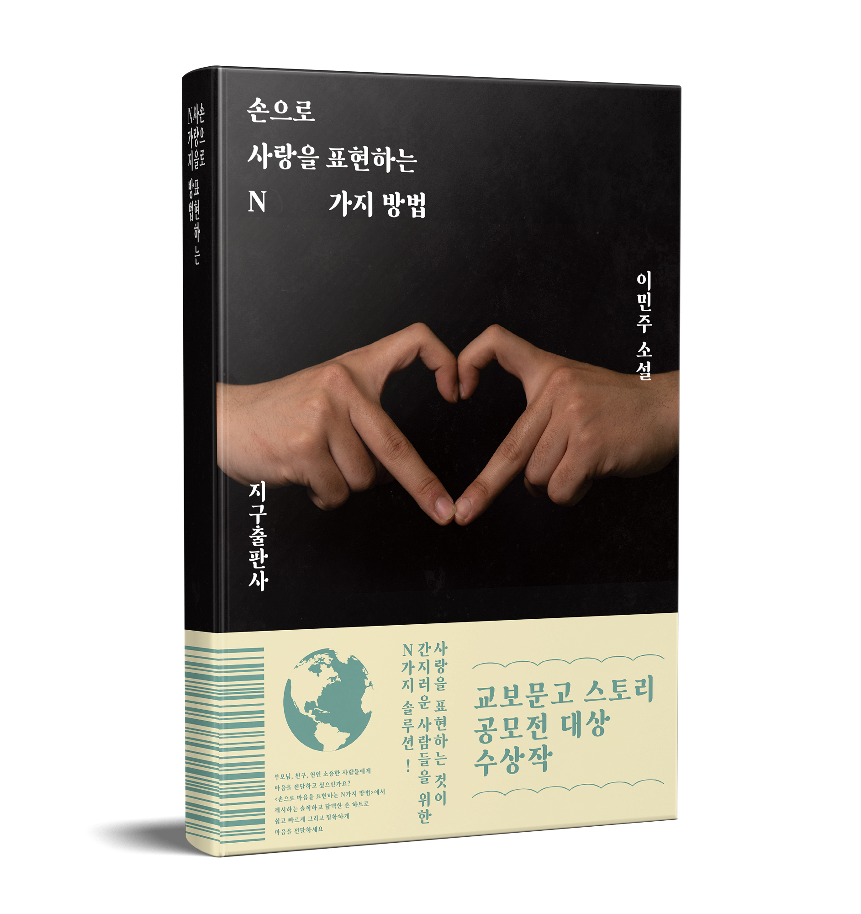

손으로 사랑을 표현하는 N가지 방법
이민주 저 지구 2022년 3월 13일

사랑을 표현하는 것이
간지러운 사람들을 위한 N가지 솔루션 !
부모님, 친구, 연인 소중한 사람들에게 마음을 전달하고 싶으신가요?
<손으로 마음을 표현하는 N가지 방법>에서 제시하는
솔직하고 담백한 손 하트로 쉽고 빠르게 그리고 정확하게
마음을 전달하세요
한 걸음씩 차근히 습득해요
1부 2부
사랑의 모양 사랑의 무게
사랑의 속도 사랑의 색감
마음의 크기 마음의 이름
작은 하트 큰 하트